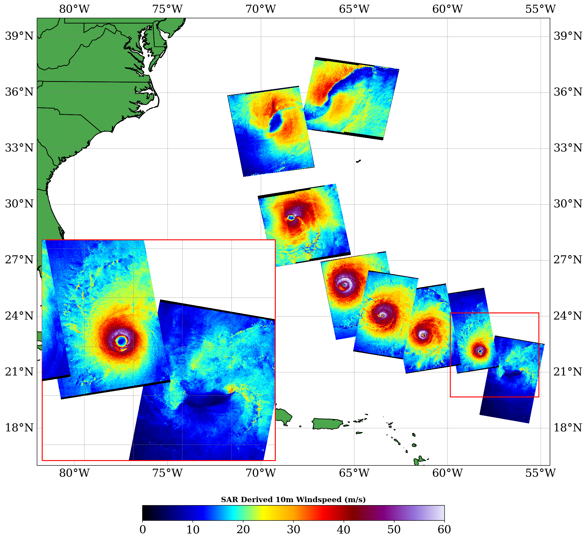
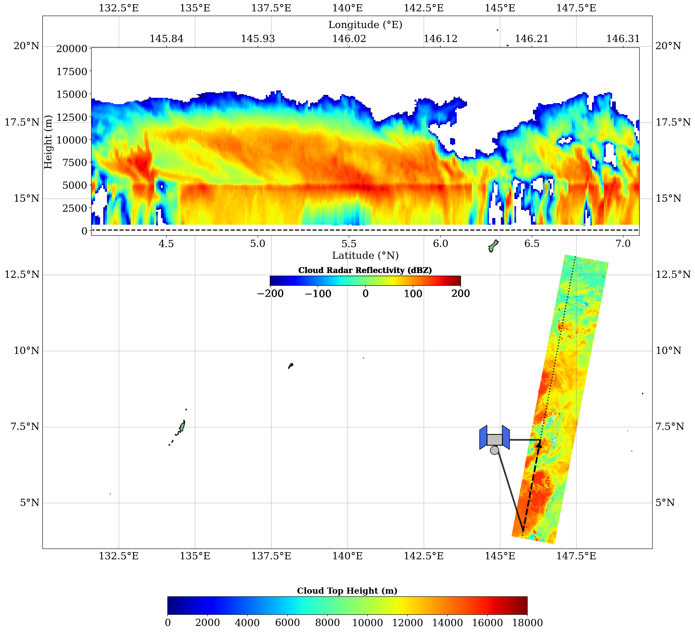
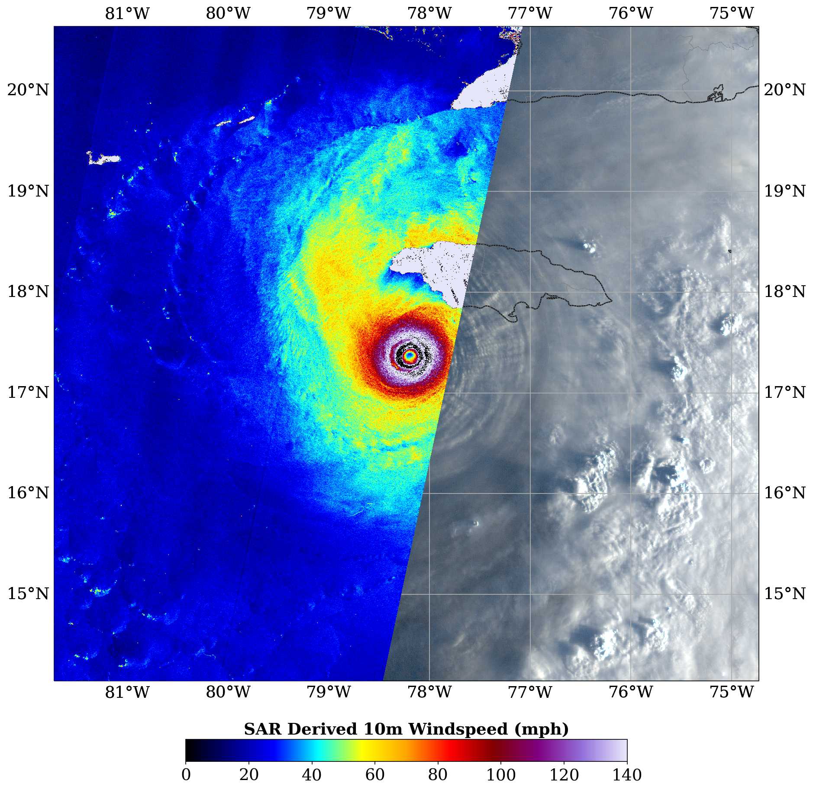

Monitoring the structural evolution of storms with high resolution (~500m) SAR imagery from Sentinel, Radarsat and RCM satellite missions.

Analyzing data from the Cloud Profiling Radar (CPR), Multi-Spectral Imager (MSI), Atmospheric Lidar (ATLID) & Broad-Band Radiometer (BBR) aboard ESA's EARTHCare satellite mission.

Combining data from the Advanced Baseline Imager (ABI) aboard the Geostationary Operational Environmental Satellite (GOES), with SAR data sources.